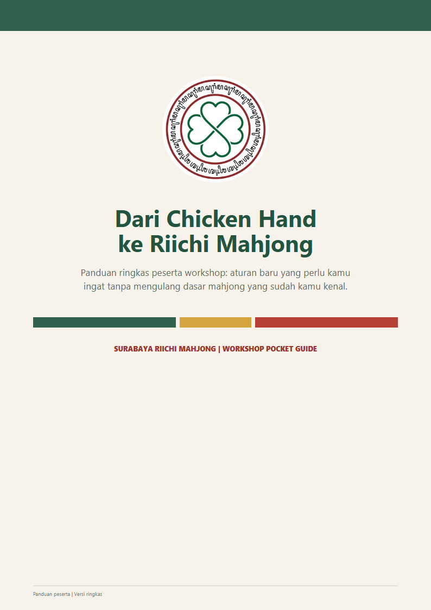
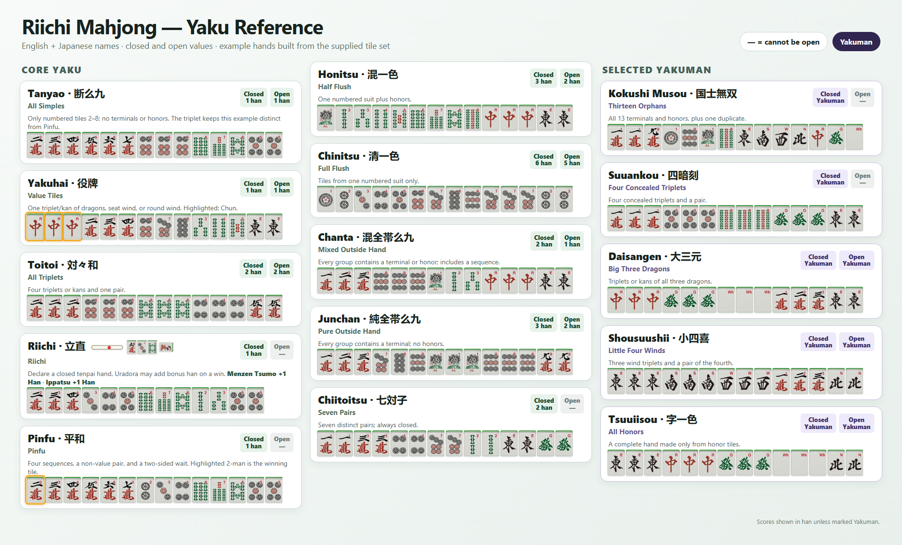

Materi ini dibuat oleh komunitas untuk komunitas — terus diperbarui seiring kami belajar cara mengajarkan Riichi dengan lebih baik.

Panduan ringkas untuk pemula: dasar setup meja, dora, deklarasi riichi, furiten, kuikae, sampai cara membaca ryuukyoku. Cocok dibawa-baca sebelum gathering pertamamu.
Unduh Panduan (PDF)Asah kemampuan membaca tangan, hitung yaku, dan pengambilan keputusan lewat platform latihan online kami — cocok untuk latihan sendiri di luar jam gathering.
Buka SURIMA AcademyLembar referensi cepat berisi yaku-yaku yang paling sering muncul di meja, disusun agar mudah dibaca sambil bermain. Klik gambar untuk memperbesar.

Panduan dan referensi di halaman ini dibuat langsung oleh anggota SURIMA, bukan terjemahan resmi. Kami akan terus memperbarui dan menambah materi seiring komunitas berkembang — masukan selalu terbuka lewat kanal kontak kami.